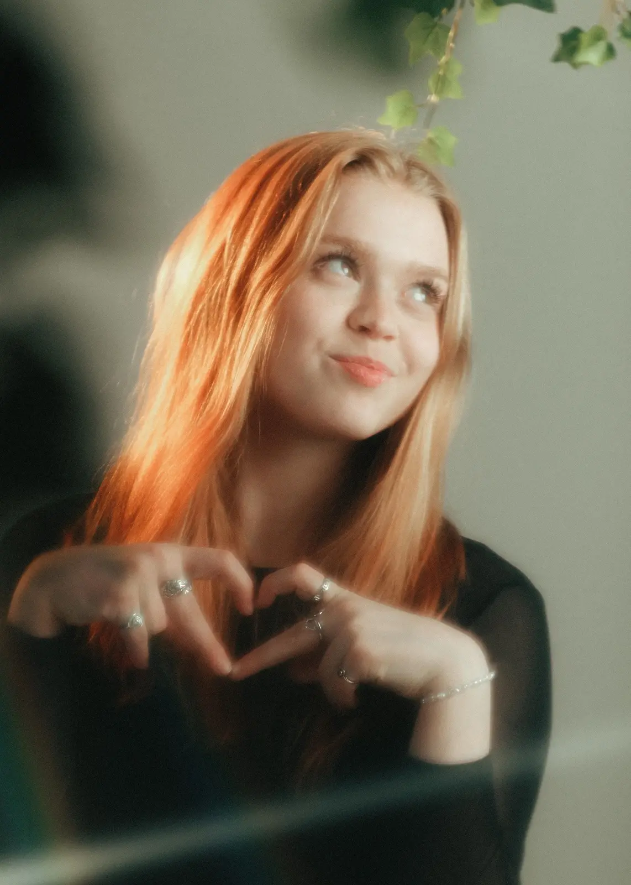
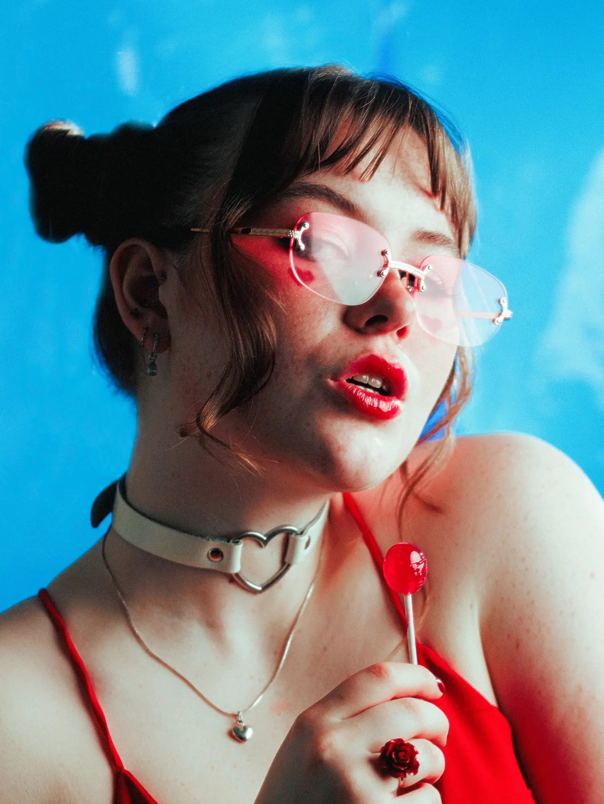
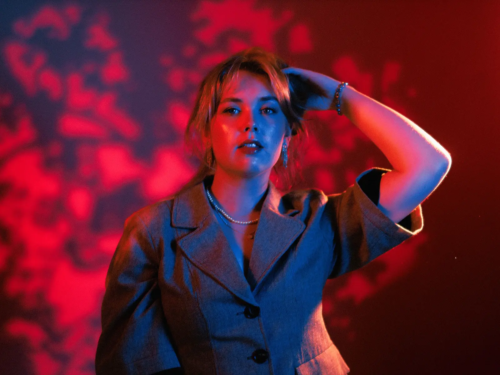
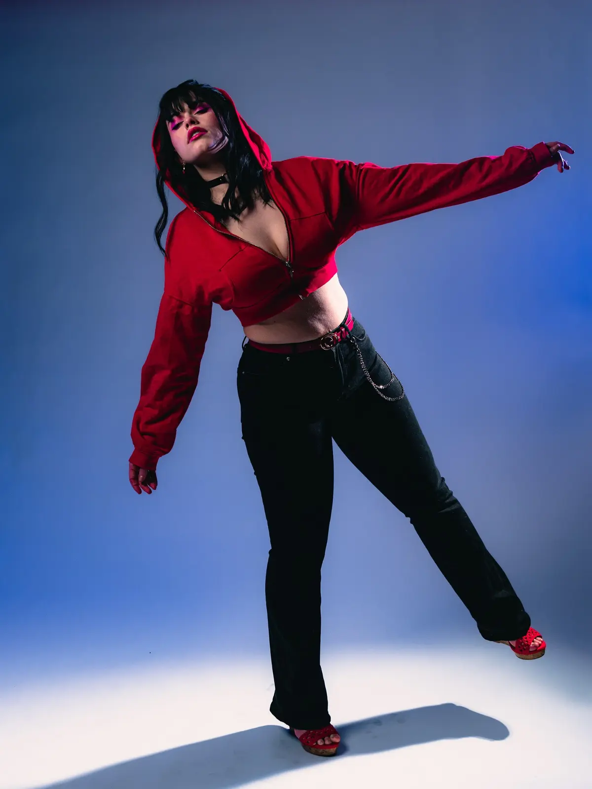

01Stutt og þægilegt
Mini sjút
35.000 kr.
Fyrir nokkrar virkilega góðar myndir — án þess að gera heilt verkefni úr því.
- Um 30 mínútur
- 3 fullunnar myndir
- Ein staðsetning
Snjókallinn · Portrett í Reykjavík
Veldu pakka, reiknaðu út verðið eða taktu stutt kviss og sjáðu hvaða myndastemning passar við þig. Þú þarft ekki að kunna að pósa — það er mitt jobb.

Pakkarnir
Fyrir einstaklinga. Öll verð eru með VSK og miðast við myndatöku fyrir kl. 17 á virkum degi.

35.000 kr.
Fyrir nokkrar virkilega góðar myndir — án þess að gera heilt verkefni úr því.
Vinsælast

59.000 kr.
Fyrir fjölbreytta myndaseríu og nægan tíma til að finna taktinn.

89.000 kr.
Fyrir stærri hugmynd, fleiri föt og myndaseríu sem fær að taka pláss.
Fleiri myndir
Þú getur alltaf bætt við myndum eftir tökuna.
1aukamynd4.000 kr.
5aukamyndir15.000 kr.
10aukamyndir25.000 kr.
Hvernig myndir viltu?
Veldu það sem togar mest í þig. Það eru engin röng svör — og þú mátt alveg vera blanda.
Kvissið flokkar ekki persónuleika. Það parar sjónrænar óskir við viðurkennd hugtök í portrettljósmyndun: editorial frásögn, candid augnablik, mjúkt náttúrulegt ljós og flass/stýrða lýsingu. Niðurstaðan er síðan þýdd yfir í Snjókallinn-stíl.
Adobe: editorial · Adobe: portrett · Adobe: golden hour · Canon: candid
Verðreiknivélin
Veldu umfang, tímasetningu og viðbætur. Verðið uppfærist strax.
Myndaval yfirleitt innan 7 daga. Fullunnar myndir 1–2 vikum eftir val.
Tilbúin/n?
Sendu mér niðurstöðuna úr kvissinu eða verðreiknivélinni — þá finnum við hugmyndina saman.
Hafa samband